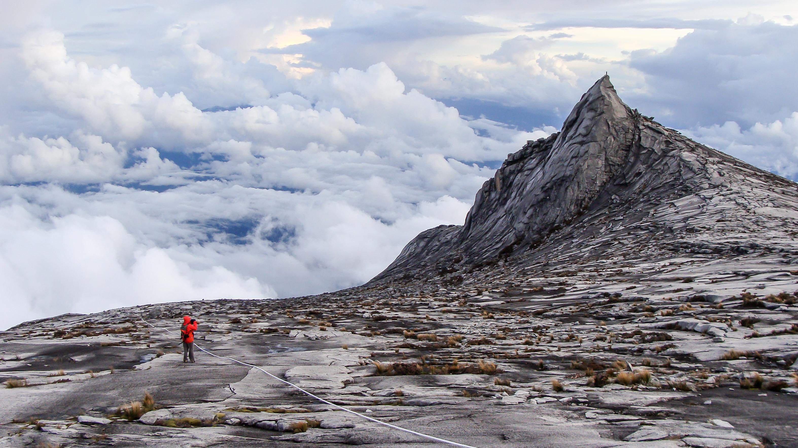

Mount Kinabalu
Tour Detail
Mount Kinabalu National Park, Sabah
07:00a.m – 05:00p.m
07:00a.m – 05:00p.m
Description
Mount Kinabalu is the tallest peak in Southeast Asia, standing proudly at 4,095 meters (13,435 feet) above sea level. Located in the Malaysian state of Sabah on the island of Borneo, it is a UNESCO World Heritage Site and one of the most iconic landmarks in Malaysia.Mount Kinabalu is renowned for its stunning natural beauty, diverse flora and fauna, and challenging hiking trails. The mountain is part of Kinabalu Park, which is one of the most important biological sites in the world, known for its rich biodiversity and unique ecosystems.
The mountain is a sacred site for the local Kadazan-Dusun people, who believe it is the resting place of their ancestors' spirits. In addition to its cultural significance, Mount Kinabalu offers visitors the opportunity to experience a range of outdoor activities, including hiking, trekking, birdwatching, and photography.
The most popular activity at Mount Kinabalu is climbing to the summit, a challenging but rewarding adventure that typically takes two days and one night. The ascent involves traversing through different vegetation zones, from tropical rainforest to alpine meadows, before reaching the rocky terrain near the summit.
The climb to the summit is usually broken into two segments: the first day involves hiking to Laban Rata, a resthouse located at around 3,270 meters (10,730 feet) above sea level, where climbers spend the night. The second day begins before dawn, with climbers ascending to the summit in time to witness a spectacular sunrise over the surrounding landscape.
The views from the summit of Mount Kinabalu are breathtaking, offering panoramic vistas of the surrounding mountains, valleys, and cloud forests stretching all the way to the South China Sea on clear days.
Aside from climbing to the summit, visitors to Mount Kinabalu can explore the lower slopes of the mountain, where they can enjoy nature walks, visit waterfalls, and observe a wide variety of plant and animal species, including pitcher plants, orchids, and colorful birds.
Gallery


